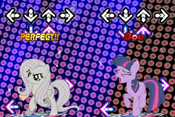
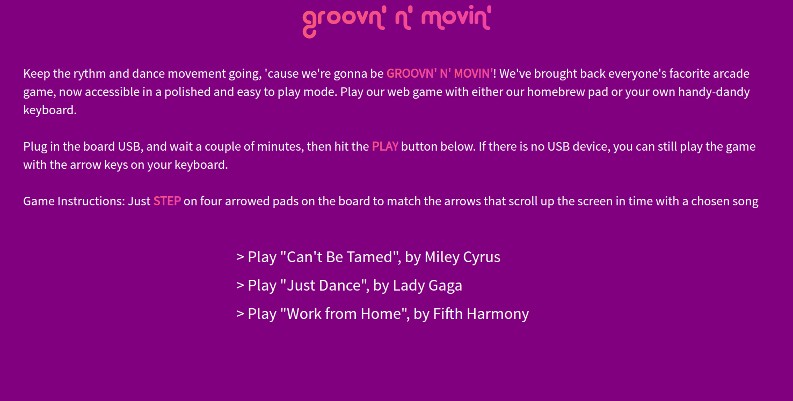

Software
Software Goals
We wanted to replicate the original DDR game design, but incorporate it into a website, instead
of a disk or game that you would typically put on a console. The goal for the player is to
hit the arrow pads at the right time. In addition, we wanted to provide a user interface that
made it easy to understand how to play the game, as well as performance score calculation that
updates in real-time.
Here is an example of the original DDR game interface:

As a result, we wanted:
- Our pressure sensors and LED on the electrical side to communicate and sync up with the game
- Have a simple, but easy to understand interface
- Have three songs with steps available for the player to choose from
Our MVP Iteration
We started our first sprint with coming up with a simple interface that includes all of our goals for the game.
Our MVP has a game menu, and then starts the game, which follows the same interface that the original DDR game has with the scrolling arrows.
Web Development Components
- Node.js: We used node.js, which is a JavaScript runtime that has an event-driven architecture capable of async I/O. This allows for real-time communication for programs and games. Node.js is also open-source, so there are a lot of written packages that can be linked to web applications very easily. In our web app, we use socket.io to do backend processing and be able to send data to the frontend that way.
- GSAP: GSAP is a javascript library that allows for DOM animation. We use GSAP to animate the floating arrows for the game.
- Serialport: In order to communicate with the arduino that is sending pressure sensor data, as well as receiving information on our end, regarding what step should be taken nect, we use the npm node.js package called Serialport. As long as the usb connecting the arduino to the computer is connected, we can receive and send data from both sides.
Our Final Implementation Interface
The web game begins in the home page with a blurb about the game and instructions for how to play the game. If the user doesn't have the mechanical board, they can use their keyboard arrow keys to play the game.
Once the player, hits play, they must hit the space bar, in order to start the game. Once the game starts, the music, which we chose to be "Can't Be Tamed", by Miley Cyrus, and arrows start floating up the screen and the player must step on the corresponding step or keyboard arrow when the arrow floats and matches the top arrow. This process is illustrated in the following gif. In addition, the player can pause and play the game when they hit space bar.

Future Work
In terms of future software work, we think that the design of the game could be much improved with more stylish divs, more songs, and more exact timing callibration between the animation and the arduino.